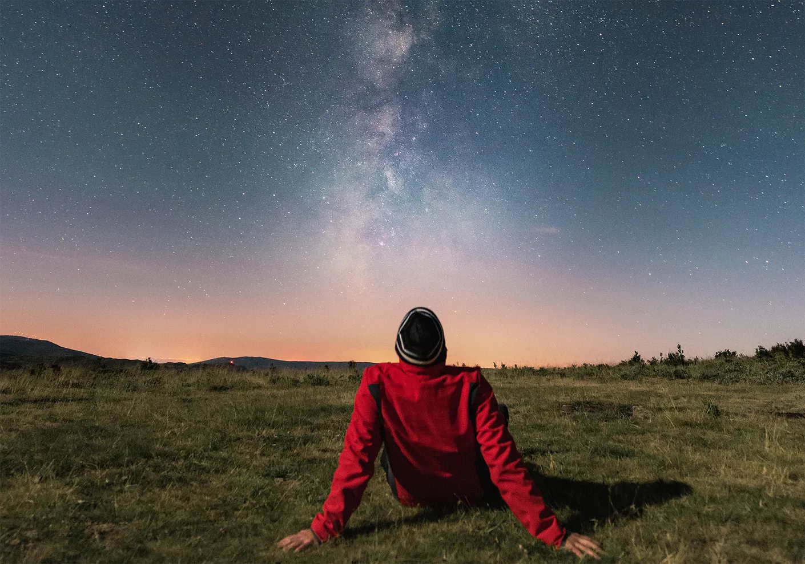
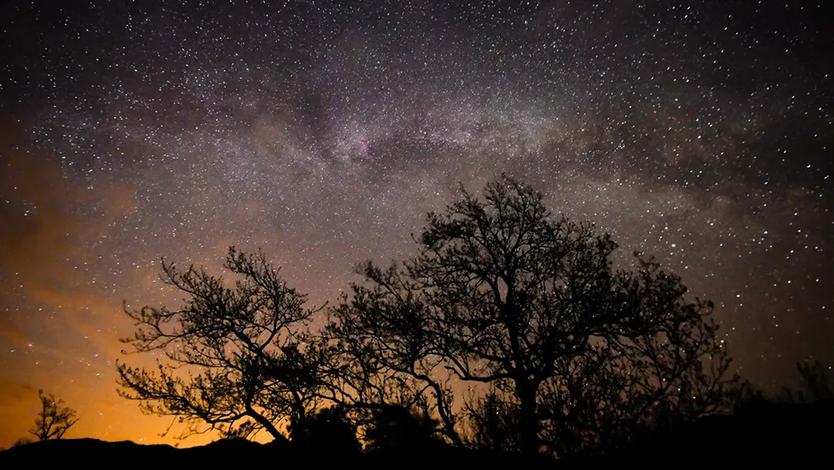
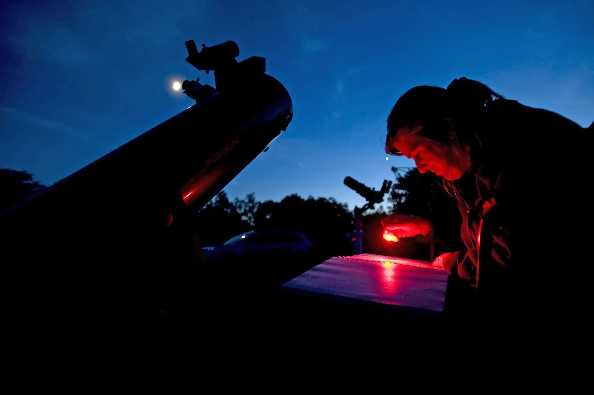
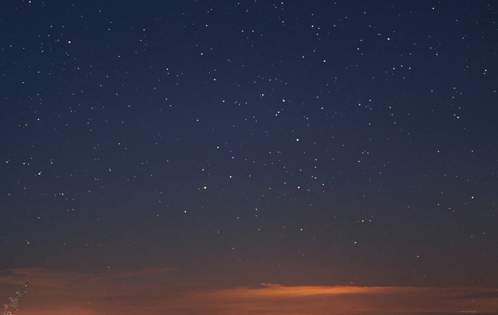
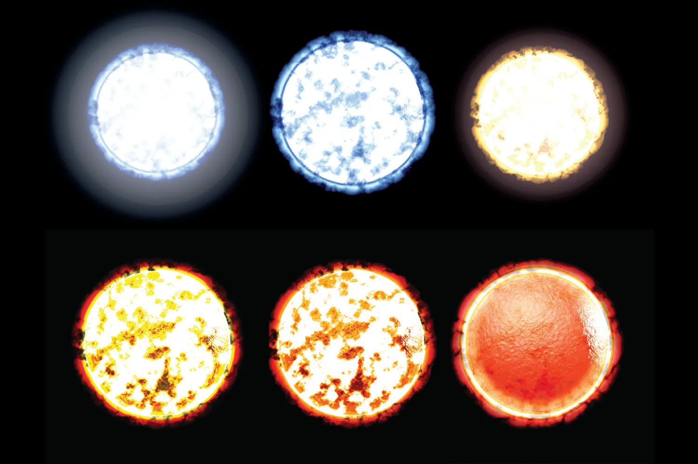
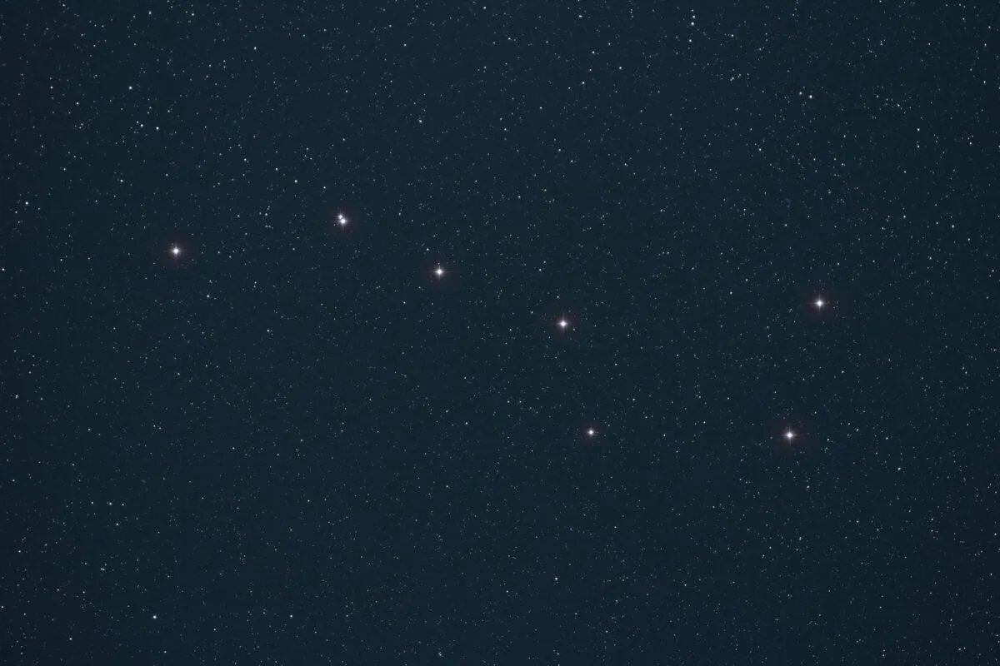

ASTRONOMY GUIDES AND STARGAZING TIPS
FRIDAY, 17 NOVEMBER 2023
4:22 PM

Stargazing is simple: simply look up! However, for some, getting started can be intimidating. Read on for our top tips on how to spend your first night under the stars.
simple steps, learn how to stargaze
By Stuart Atkinson
Published: March 4, 2022 at 5:28 pm
1. Don't wait to get started

There is a lot of standing still involved in practical astronomy and stargazing. Make sure you wear warm clothing.
Credit: Imgorthand / Getty Images
Examine yourself in the mirror before you even glance up at the sky. Are you appropriately attired?
You should prepare for the weather because you'll be outside for at least an hour, if not longer. Include a heavy jacket, thick socks, gloves, a scarf, and a cap.
Basically, you want to seem like a kid from an old Ladybird book, one of those rosy-cheeked kids playing in the winter snow.
2. Choose your stargazing site

The UK has numerous locations where dark skies are protected, including Snowdonia Dark Sky Reserve. Source: iStock
Your backyard garden may not be the best spot to stargaze, but if you're lucky, you can do so. Trees, large structures, and other residences may encircle your yard, reducing the amount of sky seen.
Additionally, light pollution from surrounding factories, pubs, shops, and streetlights as well as security lights from close homes might obstruct even more of your view.
If that's the case, leave that stuff behind. Go to a remote, dark area of the countryside outside of town. The UK has a ton of incredible locations for stargazing.
But even merely strolling to your neighborhood park or school's athletic field would significantly alter your range of vision.
3. Let your eyes adapt to darkness

For added protection for your dark-adapted vision, carry a red light torch. Image courtesy of Panther Media
GMBH/Alamy Stock Image
You must allow your eyes some time to adjust to the darkness once you've located your observation spot.
This process, which takes roughly thirty minutes, is known to astronomers as "dark adaptation."
You won’t believe how many more stars you can see than when you first arrived once your eyes have rested, opened up their pupils to adapt for the lower light levels, and released specific chemicals to boost their sensitivity.
While you wait, avoid using your phone for browsing—its bright screen will impair your night vision. However, a red screen will assist keep your dark adaptation intact.
Check out our guide on averted vision or learn how to make the screen on your iPhone red for more assistance with this.
4. Take time to observe individual stars

Credit: Paul Money
When your eyes adjust to the dark, you will discover that there are many more stars in the sky than what you would initially think from a place with excessive light pollution.
You'll notice that stars differ in brightness.
Each star is a far-off Sun, and they are all separated from us by various amounts. I take it that a brilliant star is simply closer to us than a faint one?
It's not quite that easy, though. Certain stars are more powerful and brighter than others, much like light bulbs.

With surface temperatures of about 3,000°C, the coldest stars are red, and the hottest are white, with temperatures
as high as 40,000°C. Credit: Christian Darkin / Science Photo Library
Therefore, a dim light in the sky does not always indicate low power; at a large distance from us, a star may be quite brilliant. Similarly, a nearby faint star could be bright in the sky.
The colors of the stars will also vary; most are a stark white, but as the night falls and your eyes adjust, you will see that some are more blue-tinted, while others are yellow, orange, or even red.
This is a result of the varying temperatures of stars. Blue stars are far hotter than orange stars, which makes sense when you compare the intensity of a blow torch's blue flame to that of a warm, yellow candle flame.
Stars are more than just various hues and intensities of light. We cannot see the distinctions between those that are considerably larger and smaller than our Sun.
5. Learn the constellations and asterisms

Credit: Christophe Lehenaff / Getty Images
Maybe you can make out the enormous Plough, resembling a skillet, balanced on the end of its handle.
However, the Plough is not a constellation; rather, it is an asterism, a tiny star pattern that is visible to the unaided eye and is not one of the 88 officially recognized constellations.
The Plough is a member of the Great Bear constellation, Ursa Major. The bear's head and legs are formed by the fainter stars surrounding the Plough's handle, which symbolizes the bear's tail.
The sky is home to 88 constellations, yet very few of them resemble the person, animal, or thing they are meant to represent. Most of these require a lot of ingenuity to identify!
You can star-hop across the night sky by using constellations and their stars. For example, you can use them to locate the North Star.